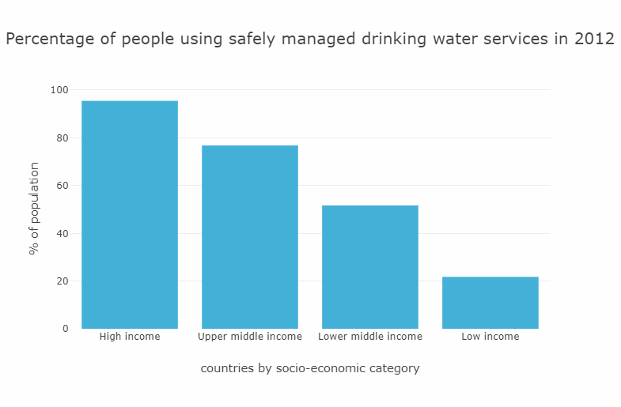

Thirsty 2 Thrive
Diving Into Charity:Water
Created in June of 2019 by Joe, Kayti, Spaar, and Yogi at UCBX Data Analytics Bootcamp
Charity:Water is known for it's unconventional financial opperations. They boast full transparency. We want to know if they have the data to back it up.
